一根 15 分 K 同時突破 7 / 14 / 25 / 99 / 120 / 200
前一根收盤完全在六條均線下方，這一根收盤完全站上六條均線。進場用訊號下一根開盤。 掃描幣安 U 本位永續近 30 天、225 個流動合約。訊號區間 07-20 → 08-19（GMT+8）。產生於 2026-08-19 21:25。 圖例每筆上面是 15 分，底下是同一時間的 1 小時圖。僅供型態對照，不是進出場建議。
1 小時濾網只用訊號當下已收完的小時 K，不偷看還在走的那根收盤。 能把 4h 勝率拉開、而且 7 天與 30 天方向一致的：1h 已站上帶且距 MA200 ≤ 8%：41 筆、4h 勝率 63.4%、均 +1.25%；價上 MA200、帶緊、未延伸：116 筆、4h 勝率 52.6%、均 +0.49%。 另外濾掉「15m 收盤比 1h MA200 高出超過 8%」的追價（BSB / IREN 那種 1h 已經拉很遠、短均還黏在現價上面）。 代價是成交變少。1h 還在整條帶下的 15 分穿刺，短線勝率不一定差，平均常被少數大漲拉高，但不穩。
圖例
黃虛線：15 分圖是穿越六條均線的那根；1 小時圖是這根 15 分所在的小時 K。圖例以 1h 濾網後的樣本為主；小米（HK1810）只要 15 分條件過就留在最上面，方便對照。
小米 HK1810 08-19 09:00 · 4h +6.65%
15 分圖 · 黃虛線是同時穿過六條均線的那根

1 小時圖 · 黃虛線是上面那根 15 分所在的小時 K

寬度 1.199% · 量比 13.41× · 15m / 1h / 4h / 8h：+2.11% / +4.73% / +6.65% / +4.69% · 實體穿越 · 1h 帶內 · 綠小時 · 15m收在1h MA200下（-0.33%）
小米 HK1810 08-17 09:15 · 4h +0.89%
15 分圖 · 黃虛線是同時穿過六條均線的那根

1 小時圖 · 黃虛線是上面那根 15 分所在的小時 K

寬度 0.102% · 量比 8.94× · 15m / 1h / 4h / 8h：+0.93% / +1.12% / +0.89% / +0.35% · 實體穿越 · 1h 帶內 · 綠小時 · 15m收在1h MA200下（-1.97%）
AKE 08-13 16:30 · 4h +31.41%
15 分圖 · 黃虛線是同時穿過六條均線的那根

1 小時圖 · 黃虛線是上面那根 15 分所在的小時 K

寬度 2.641% · 量比 6.82× · 15m / 1h / 4h / 8h：+1.15% / +1.90% / +31.41% / +50.66% · 實體穿越 · 1h 帶下 · 綠小時 · 15m收在1h MA200上（+1.63%）
GPS 08-13 17:45 · 4h +14.35%
15 分圖 · 黃虛線是同時穿過六條均線的那根

1 小時圖 · 黃虛線是上面那根 15 分所在的小時 K

寬度 0.567% · 量比 17.15× · 15m / 1h / 4h / 8h：-0.09% / +2.25% / +14.35% / +5.03% · 實體穿越 · 1h 帶上 · 綠小時 · 15m收在1h MA200上（+5.87%）
US 07-24 11:45 · 4h +9.32%
15 分圖 · 黃虛線是同時穿過六條均線的那根
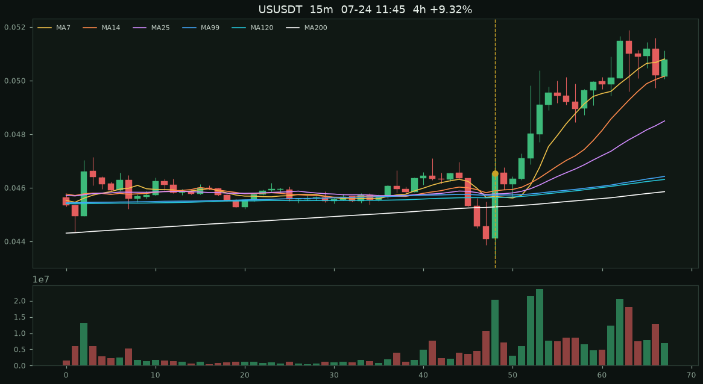
1 小時圖 · 黃虛線是上面那根 15 分所在的小時 K
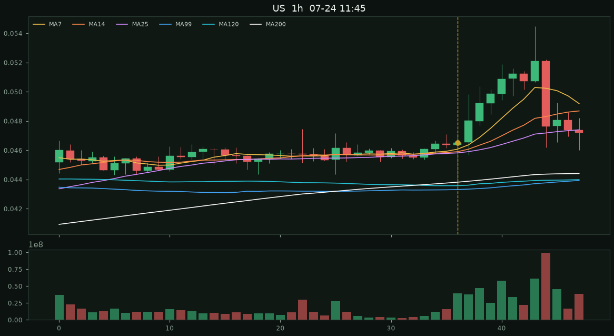
寬度 1.218% · 量比 5.25× · 15m / 1h / 4h / 8h：-0.90% / +3.15% / +9.32% / +2.36% · 實體穿越 · 1h 帶上 · 綠小時 · 15m收在1h MA200上（+6.19%）
CBRS 08-03 21:45 · 4h +7.46%
15 分圖 · 黃虛線是同時穿過六條均線的那根
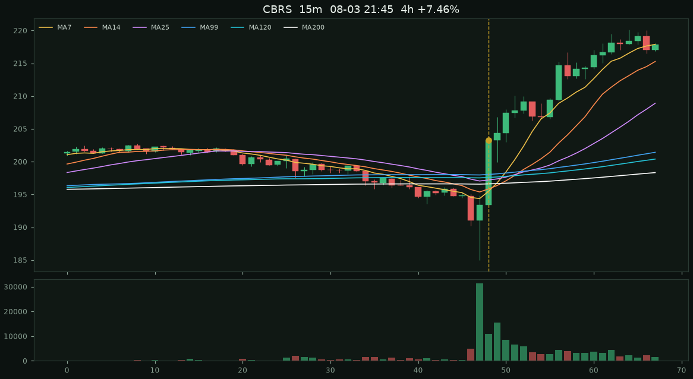
1 小時圖 · 黃虛線是上面那根 15 分所在的小時 K
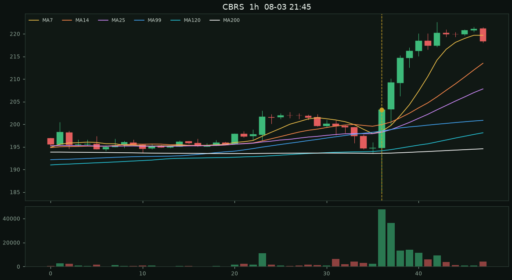
寬度 1.858% · 量比 3.68× · 15m / 1h / 4h / 8h：+0.52% / +2.92% / +7.46% / +8.17% · 實體穿越 · 1h 帶上 · 綠小時 · 15m收在1h MA200上（+4.99%）
JCT 08-05 00:45 · 4h +6.31%
15 分圖 · 黃虛線是同時穿過六條均線的那根

1 小時圖 · 黃虛線是上面那根 15 分所在的小時 K

寬度 2.564% · 量比 10.39× · 15m / 1h / 4h / 8h：+4.64% / +4.06% / +6.31% / +1.93% · 實體穿越 · 1h 帶上 · 綠小時 · 15m收在1h MA200上（+1.05%）
MSFT 07-30 04:15 · 4h +5.81%
15 分圖 · 黃虛線是同時穿過六條均線的那根
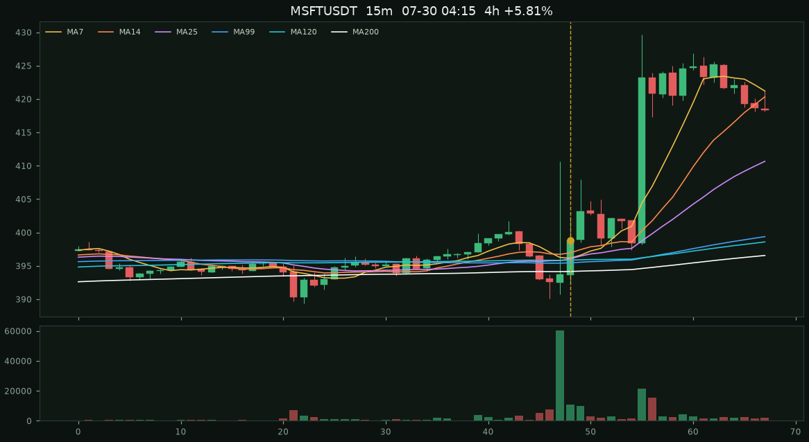
1 小時圖 · 黃虛線是上面那根 15 分所在的小時 K
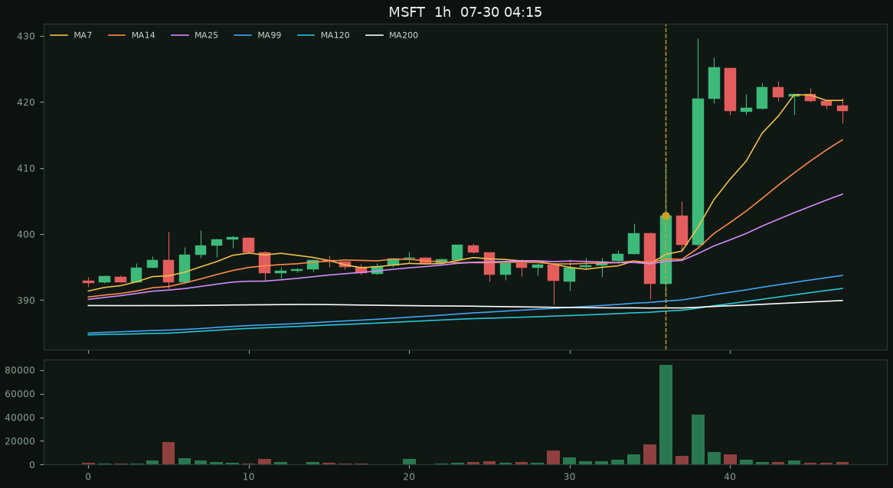
寬度 0.659% · 量比 2.08× · 15m / 1h / 4h / 8h：+1.09% / +0.82% / +5.81% / +5.49% · 實體穿越 · 1h 帶內 · 綠小時 · 15m收在1h MA200上（+2.58%）
LIT 07-28 21:45 · 4h +5.41%
15 分圖 · 黃虛線是同時穿過六條均線的那根

1 小時圖 · 黃虛線是上面那根 15 分所在的小時 K
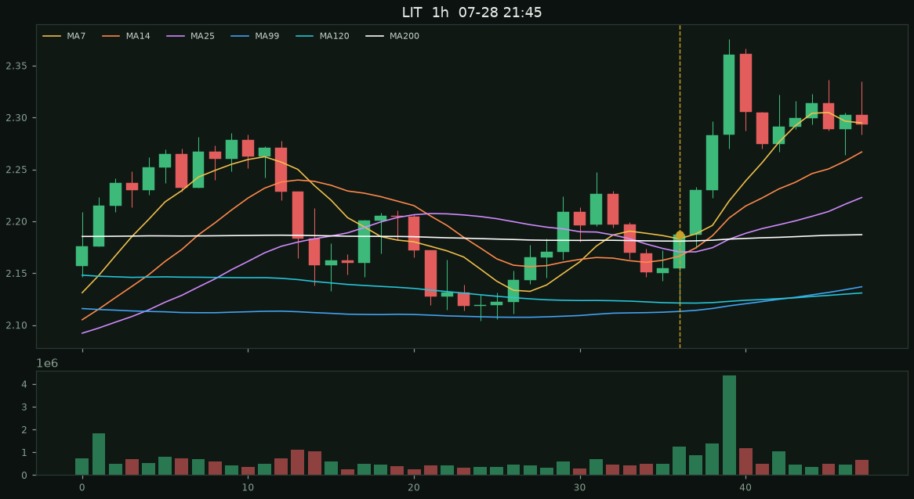
寬度 1.190% · 量比 1.39× · 15m / 1h / 4h / 8h：+0.61% / +1.97% / +5.41% / +5.78% · 實體穿越 · 1h 帶上 · 綠小時 · 15m收在1h MA200上（+0.29%）
1000RATS 07-29 06:15 · 4h +4.32%
15 分圖 · 黃虛線是同時穿過六條均線的那根

1 小時圖 · 黃虛線是上面那根 15 分所在的小時 K

寬度 0.307% · 量比 2.15× · 15m / 1h / 4h / 8h：-0.12% / +2.08% / +4.32% / +0.66% · 實體穿越 · 1h 帶上 · 紅小時 · 15m收在1h MA200上（+0.06%）
JCT 07-27 19:45 · 4h -2.00%
15 分圖 · 黃虛線是同時穿過六條均線的那根
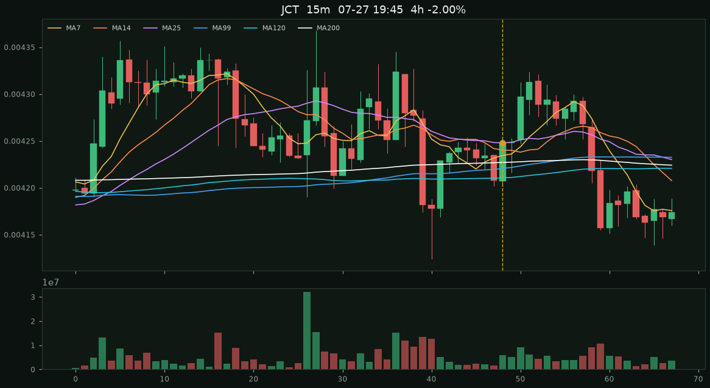
1 小時圖 · 黃虛線是上面那根 15 分所在的小時 K
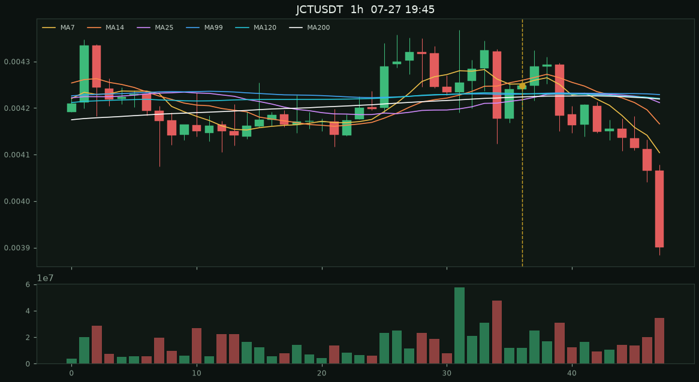
寬度 0.906% · 量比 0.97× · 15m / 1h / 4h / 8h：+0.00% / +0.97% / -2.00% / -2.64% · 實體穿越 · 1h 帶內 · 綠小時 · 15m收在1h MA200上（+0.57%）
EDEN 07-25 04:00 · 4h -2.15%
15 分圖 · 黃虛線是同時穿過六條均線的那根
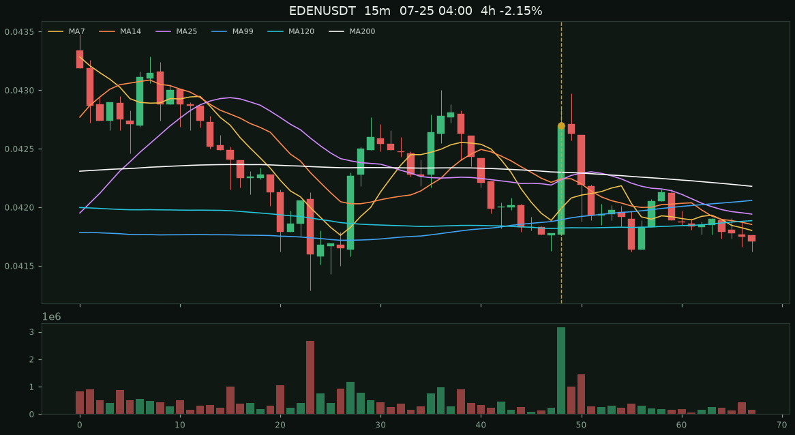
1 小時圖 · 黃虛線是上面那根 15 分所在的小時 K

寬度 1.156% · 量比 6.04× · 15m / 1h / 4h / 8h：-0.19% / -1.80% / -2.15% / -3.04% · 實體穿越 · 1h 帶下 · 綠小時 · 15m收在1h MA200上（+0.44%）
BE 08-14 21:30 · 4h -2.34%
15 分圖 · 黃虛線是同時穿過六條均線的那根
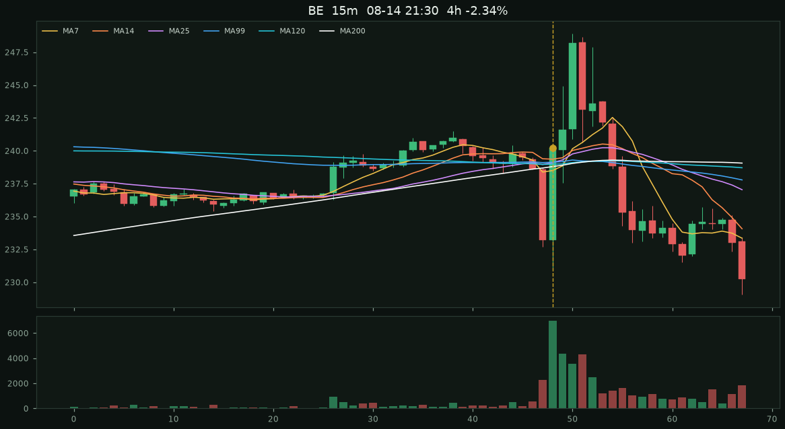
1 小時圖 · 黃虛線是上面那根 15 分所在的小時 K
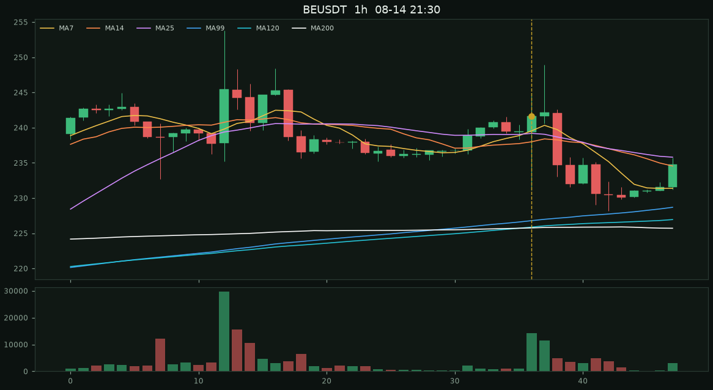
寬度 0.424% · 量比 10.06× · 15m / 1h / 4h / 8h：+0.65% / +1.47% / -2.34% / -4.02% · 實體穿越 · 1h 帶上 · 綠小時 · 15m收在1h MA200上（+6.43%）
RKLB 08-13 21:30 · 4h -2.78%
15 分圖 · 黃虛線是同時穿過六條均線的那根
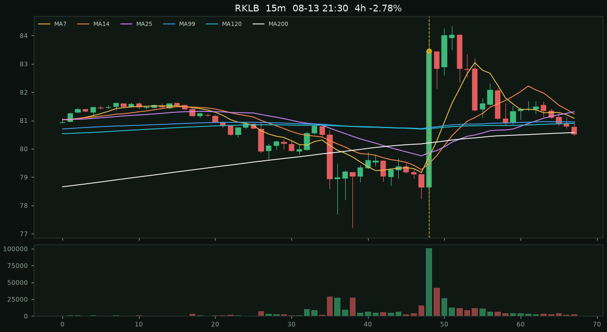
1 小時圖 · 黃虛線是上面那根 15 分所在的小時 K

寬度 1.955% · 量比 7.26× · 15m / 1h / 4h / 8h：-0.72% / -0.72% / -2.78% / -3.27% · 實體穿越 · 1h 帶下 · 綠小時 · 15m收在1h MA200上（+4.21%）
XPIN 07-30 21:30 · 4h -2.94%
15 分圖 · 黃虛線是同時穿過六條均線的那根
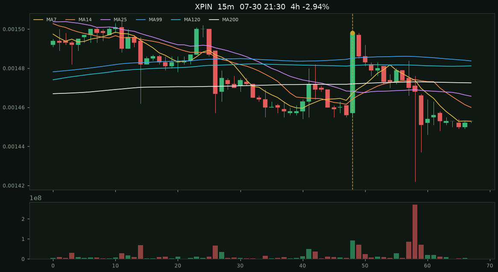
1 小時圖 · 黃虛線是上面那根 15 分所在的小時 K
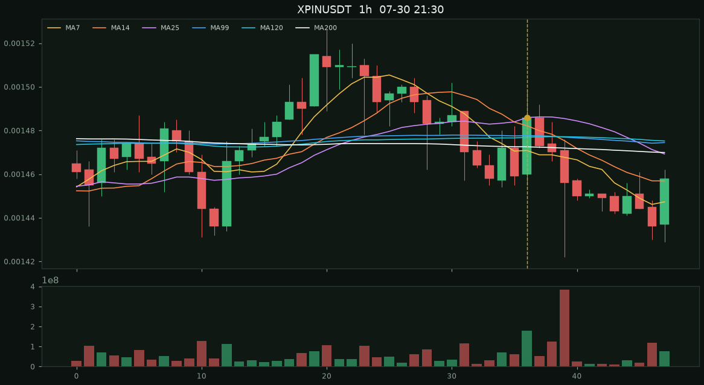
寬度 1.571% · 量比 6.37× · 15m / 1h / 4h / 8h：-0.73% / -1.14% / -2.94% / -2.87% · 實體穿越 · 1h 帶下 · 綠小時 · 15m收在1h MA200上（+1.73%）
BOT 08-05 23:30 · 4h -2.98%
15 分圖 · 黃虛線是同時穿過六條均線的那根
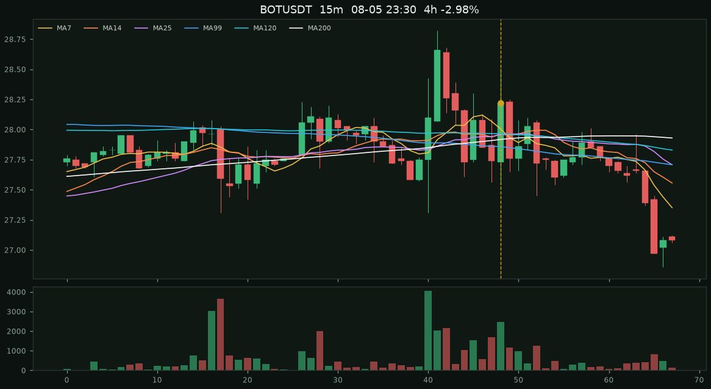
1 小時圖 · 黃虛線是上面那根 15 分所在的小時 K
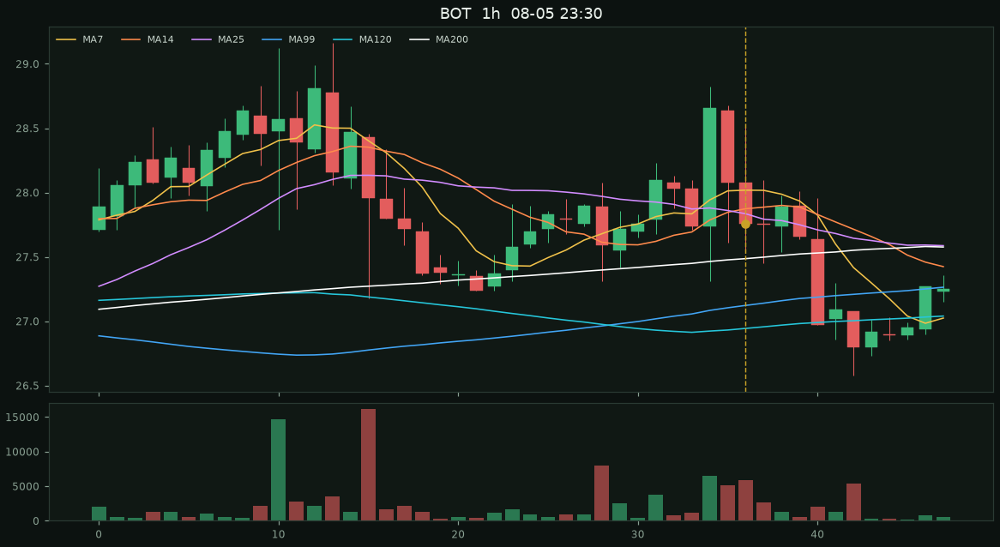
寬度 0.746% · 量比 2.67× · 15m / 1h / 4h / 8h：-1.66% / -1.81% / -2.98% / -4.64% · 實體穿越 · 1h 帶上 · 綠小時 · 15m收在1h MA200上（+2.70%）
BIO 07-27 21:30 · 4h -3.09%
15 分圖 · 黃虛線是同時穿過六條均線的那根
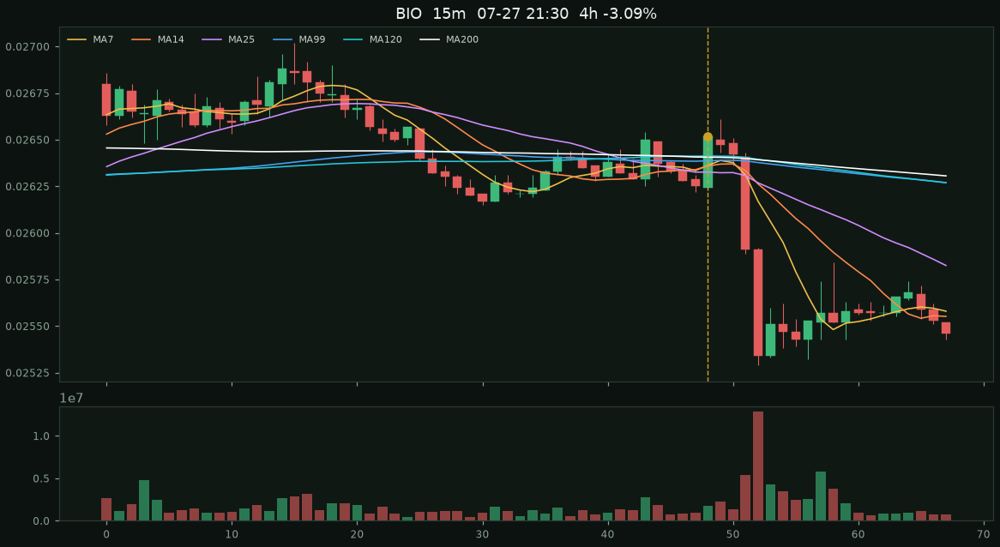
1 小時圖 · 黃虛線是上面那根 15 分所在的小時 K
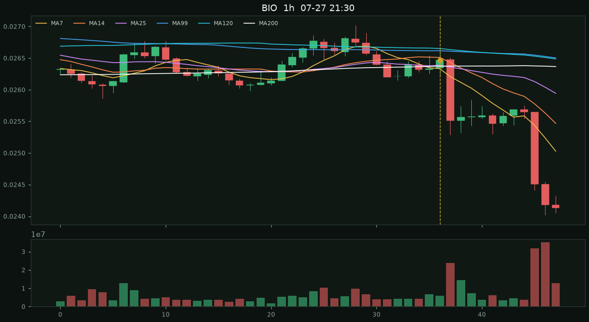
寬度 0.325% · 量比 1.47× · 15m / 1h / 4h / 8h：-0.11% / -4.38% / -3.09% / -3.40% · 實體穿越 · 1h 帶下 · 綠小時 · 15m收在1h MA200上（+0.58%）
BIO 07-27 20:15 · 4h -3.44%
15 分圖 · 黃虛線是同時穿過六條均線的那根
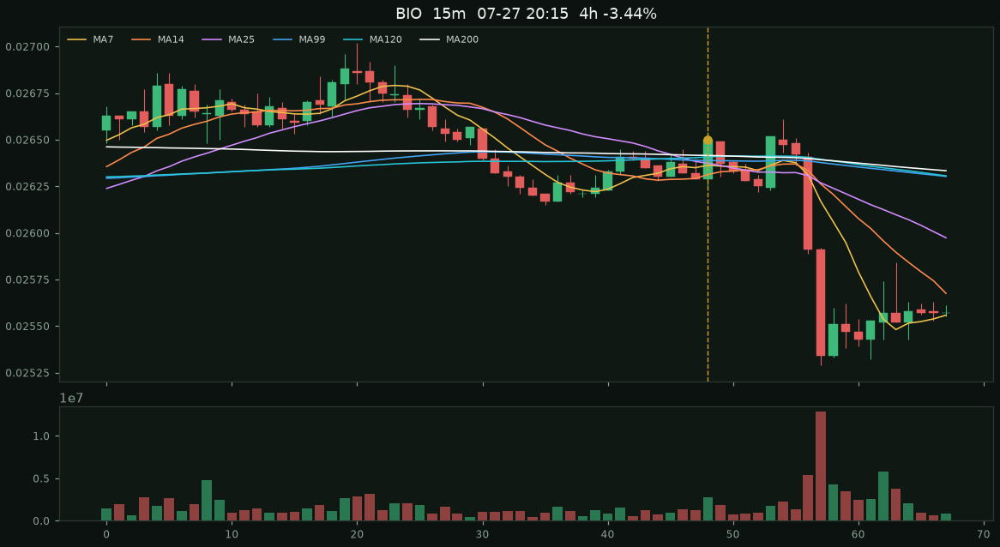
1 小時圖 · 黃虛線是上面那根 15 分所在的小時 K
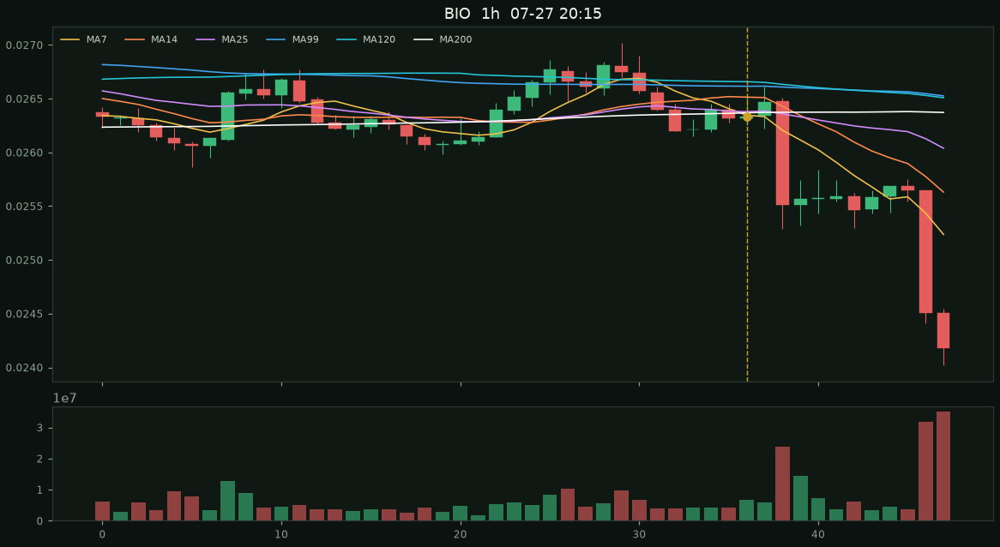
寬度 0.473% · 量比 2.47× · 15m / 1h / 4h / 8h：-0.45% / -0.91% / -3.44% / -3.32% · 實體穿越 · 1h 帶下 · 綠小時 · 15m收在1h MA200上（+0.52%）
COTI 07-27 17:30 · 4h +4.16%
15 分圖 · 黃虛線是同時穿過六條均線的那根
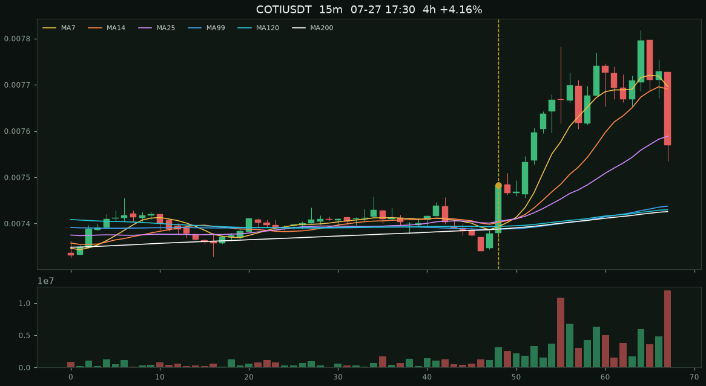
1 小時圖 · 黃虛線是上面那根 15 分所在的小時 K

寬度 0.193% · 量比 3.56× · 15m / 1h / 4h / 8h：-0.24% / +1.51% / +4.16% / +4.30% · 實體穿越 · 1h 帶內 · 綠小時 · 15m收在1h MA200上（+0.94%）
ATOM 08-10 21:45 · 4h +2.82%
15 分圖 · 黃虛線是同時穿過六條均線的那根

1 小時圖 · 黃虛線是上面那根 15 分所在的小時 K
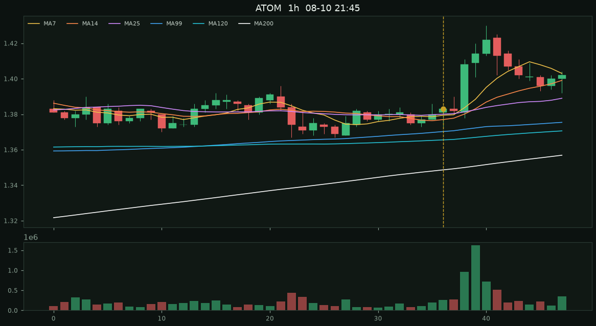
寬度 0.250% · 量比 1.63× · 15m / 1h / 4h / 8h：+0.07% / -0.07% / +2.82% / +1.30% · 實體穿越 · 1h 帶上 · 綠小時 · 15m收在1h MA200上（+2.55%）
TRUMP 07-22 21:30 · 4h +1.88%
15 分圖 · 黃虛線是同時穿過六條均線的那根

1 小時圖 · 黃虛線是上面那根 15 分所在的小時 K
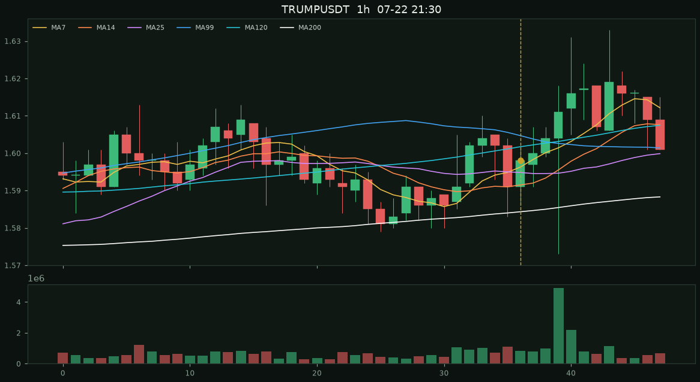
寬度 0.263% · 量比 1.26× · 15m / 1h / 4h / 8h：-0.06% / -0.31% / +1.88% / +1.00% · 實體穿越 · 1h 帶內 · 綠小時 · 15m收在1h MA200上（+1.01%）
TRUMP 07-23 00:30 · 4h +1.44%
15 分圖 · 黃虛線是同時穿過六條均線的那根

1 小時圖 · 黃虛線是上面那根 15 分所在的小時 K

寬度 0.234% · 量比 1.32× · 15m / 1h / 4h / 8h：+0.75% / +1.88% / +1.44% / +0.56% · 實體穿越 · 1h 帶上 · 紅小時 · 15m收在1h MA200上（+0.95%）
LDO 08-15 13:00 · 4h +1.41%
15 分圖 · 黃虛線是同時穿過六條均線的那根

1 小時圖 · 黃虛線是上面那根 15 分所在的小時 K

寬度 0.363% · 量比 6.29× · 15m / 1h / 4h / 8h：-0.34% / +0.44% / +1.41% / +0.54% · 實體穿越 · 1h 帶內 · 綠小時 · 15m收在1h MA200上（+1.98%）
SPCX 08-17 08:00 · 4h +1.37%
15 分圖 · 黃虛線是同時穿過六條均線的那根

1 小時圖 · 黃虛線是上面那根 15 分所在的小時 K

寬度 0.247% · 量比 12.19× · 15m / 1h / 4h / 8h：+0.49% / +0.41% / +1.37% / +1.03% · 實體穿越 · 1h 帶內 · 綠小時 · 15m收在1h MA200上（+1.45%）
XMR 08-15 05:45 · 4h +1.32%
15 分圖 · 黃虛線是同時穿過六條均線的那根

1 小時圖 · 黃虛線是上面那根 15 分所在的小時 K

寬度 0.309% · 量比 1.22× · 15m / 1h / 4h / 8h：-0.14% / +0.02% / +1.32% / +1.51% · 實體穿越 · 1h 帶上 · 綠小時 · 15m收在1h MA200上（+2.64%）
用 1 小時當濾網（30 天）
只看訊號當下已收完的 1 小時 K。當根小時「已翻綠」= 這根 15 分收盤已經高於該小時開盤，幾乎每筆都會過，所以沒有區分度。
| 條件 | 筆數 | 幣數 | 下一根假突破 | 15m勝率 | 15m均 | 30m勝率 | 30m均 | 1h勝率 | 1h均 | 2h勝率 | 2h均 | 4h勝率 | 4h均 | 8h勝率 | 8h均 |
|---|---|---|---|---|---|---|---|---|---|---|---|---|---|---|---|
| 原始（有 1h 狀態） | 510 | 193 | 38.6% | 38.8% | -0.111% | 40.0% | -0.117% | 44.5% | -0.047% | 44.3% | +0.027% | 49.1% | +0.150% | 47.8% | +0.179% |
| （對照）1h 仍在整條帶下 | 117 | 85 | 41.9% | 32.5% | -0.171% | 36.8% | -0.199% | 45.3% | -0.007% | 45.7% | +0.589% | 53.4% | +0.685% | 46.1% | +0.576% |
| （對照）15m 收還在 1h MA200 下 | 213 | 112 | 40.8% | 38.0% | -0.089% | 40.8% | -0.057% | 45.1% | -0.022% | 45.3% | -0.010% | 49.5% | +0.194% | 49.3% | +0.250% |
| 1h 在帶內 | 338 | 161 | 39.6% | 40.8% | -0.099% | 40.2% | -0.102% | 43.8% | -0.092% | 42.4% | -0.261% | 46.3% | -0.053% | 48.4% | +0.046% |
| 1h 已站上整條帶 | 55 | 41 | 25.5% | 40.0% | -0.055% | 45.5% | -0.040% | 47.3% | +0.147% | 52.7% | +0.599% | 57.4% | +0.270% | 48.1% | +0.160% |
| 1h 收在 MA200 上 | 250 | 129 | 39.2% | 38.8% | -0.147% | 39.6% | -0.177% | 44.0% | -0.151% | 43.8% | -0.264% | 47.2% | -0.192% | 45.9% | -0.200% |
| 1h 收在 MA99 上 | 259 | 142 | 40.2% | 39.8% | -0.117% | 39.0% | -0.125% | 44.0% | -0.120% | 42.5% | -0.158% | 47.7% | -0.003% | 46.9% | +0.043% |
| 1h MA7 > MA200 | 253 | 129 | 39.9% | 39.1% | -0.180% | 37.9% | -0.223% | 43.1% | -0.180% | 42.5% | -0.341% | 46.2% | -0.209% | 46.6% | -0.161% |
| 上一根完整 1h 是陽線 | 190 | 116 | 31.1% | 42.1% | +0.004% | 50.0% | +0.044% | 52.1% | +0.149% | 49.5% | +0.160% | 51.9% | +0.320% | 46.8% | +0.293% |
| 1h MA7 向上 | 194 | 107 | 28.9% | 43.3% | -0.047% | 52.1% | +0.044% | 49.5% | +0.116% | 47.9% | +0.105% | 54.5% | +0.202% | 46.3% | -0.019% |
| 當根小時已翻綠 | 492 | 192 | 38.2% | 39.2% | -0.104% | 40.0% | -0.115% | 44.3% | -0.053% | 44.1% | -0.010% | 48.7% | +0.167% | 47.5% | +0.194% |
| 15m 收盤站上 1h MA200 | 297 | 147 | 37.0% | 39.4% | -0.126% | 39.4% | -0.161% | 44.1% | -0.065% | 43.6% | +0.053% | 48.8% | +0.119% | 46.8% | +0.128% |
| 15m 收盤站上 1h 帶頂 | 221 | 115 | 32.6% | 40.7% | -0.085% | 39.4% | -0.124% | 44.8% | +0.052% | 45.0% | +0.212% | 49.8% | +0.277% | 48.6% | +0.378% |
| 離 1h MA200 0～2% | 123 | 74 | 38.2% | 39.8% | -0.052% | 41.5% | -0.065% | 44.7% | -0.072% | 47.2% | +0.320% | 52.0% | +0.311% | 44.7% | +0.297% |
| （對照）距 1h MA200 > 8%（追價） | 68 | 44 | 33.8% | 44.1% | -0.358% | 35.3% | -0.454% | 41.2% | -0.217% | 32.4% | -0.542% | 38.8% | -0.586% | 43.9% | -0.387% |
| 距 1h MA200 ≤ 8% | 442 | 174 | 39.4% | 38.0% | -0.073% | 40.7% | -0.066% | 45.0% | -0.020% | 46.1% | +0.114% | 50.7% | +0.262% | 48.4% | +0.264% |
| 1h 帶寬 ≤ 1.5% | 126 | 63 | 34.9% | 41.3% | -0.002% | 43.7% | +0.054% | 50.8% | +0.106% | 46.8% | +0.436% | 49.2% | +0.455% | 45.6% | +0.448% |
| 排除：1h 還在帶下 | 393 | 172 | 37.7% | 40.7% | -0.092% | 41.0% | -0.093% | 44.3% | -0.059% | 43.9% | -0.140% | 47.8% | -0.008% | 48.3% | +0.061% |
| 當根小時綠 + 價在 1h MA200 上 | 286 | 143 | 36.4% | 40.2% | -0.115% | 39.2% | -0.162% | 43.4% | -0.082% | 42.8% | -0.008% | 47.9% | +0.136% | 45.7% | +0.143% |
| 1h 收 MA200 上 + 小時已綠 | 239 | 125 | 38.5% | 39.7% | -0.135% | 39.3% | -0.179% | 43.1% | -0.176% | 42.9% | -0.351% | 46.0% | -0.186% | 44.7% | -0.196% |
| 1h 收 MA200 上 + 15m 實體穿越 | 239 | 127 | 38.9% | 38.5% | -0.134% | 40.2% | -0.169% | 45.2% | -0.123% | 45.0% | -0.208% | 48.1% | -0.089% | 47.0% | -0.073% |
| 價在 1h MA200 上 + 1h 帶寬≤2% | 116 | 67 | 36.2% | 38.8% | -0.022% | 42.2% | +0.022% | 47.4% | +0.058% | 47.4% | +0.441% | 52.6% | +0.487% | 45.7% | +0.440% |
| 價上 MA200、帶緊、未延伸 | 116 | 67 | 36.2% | 38.8% | -0.022% | 42.2% | +0.022% | 47.4% | +0.058% | 47.4% | +0.441% | 52.6% | +0.487% | 45.7% | +0.440% |
| 1h 收 MA200 上且未延伸 | 83 | 52 | 42.2% | 41.0% | +0.068% | 47.0% | +0.109% | 48.2% | +0.111% | 53.0% | +0.300% | 51.8% | +0.240% | 44.6% | -0.101% |
| 1h 已站上帶且距 MA200 ≤ 8% | 41 | 30 | 24.4% | 43.9% | +0.141% | 51.2% | +0.292% | 48.8% | +0.502% | 56.1% | +1.050% | 63.4% | +1.251% | 46.3% | +0.589% |
| 順勢：1h 在 MA200 上且小時已綠 | 239 | 125 | 38.5% | 39.7% | -0.135% | 39.3% | -0.179% | 43.1% | -0.176% | 42.9% | -0.351% | 46.0% | -0.186% | 44.7% | -0.196% |
| 組合：小時綠 + 價上 MA200 + 非帶下 + 實體 | 252 | 134 | 36.5% | 40.9% | -0.110% | 40.5% | -0.147% | 44.0% | -0.123% | 43.8% | -0.257% | 48.8% | -0.094% | 47.0% | -0.078% |
最近 7 天同一組 1h 濾網（容易過擬合，只拿來對照）
| 條件 | 筆數 | 幣數 | 下一根假突破 | 15m勝率 | 15m均 | 30m勝率 | 30m均 | 1h勝率 | 1h均 | 2h勝率 | 2h均 | 4h勝率 | 4h均 | 8h勝率 | 8h均 |
|---|---|---|---|---|---|---|---|---|---|---|---|---|---|---|---|
| 原始（有 1h 狀態） | 132 | 84 | 37.9% | 37.1% | -0.304% | 37.1% | -0.287% | 42.4% | -0.123% | 39.2% | -0.022% | 45.7% | +0.176% | 42.1% | +0.476% |
| （對照）1h 仍在整條帶下 | 36 | 33 | 36.1% | 38.9% | -0.046% | 36.1% | +0.098% | 44.4% | +0.130% | 31.4% | +0.747% | 34.3% | +0.575% | 29.4% | +0.935% |
| （對照）15m 收還在 1h MA200 下 | 67 | 49 | 31.3% | 46.3% | -0.039% | 43.3% | +0.028% | 40.3% | +0.061% | 36.4% | -0.082% | 36.4% | -0.218% | 32.3% | -0.303% |
| 1h 在帶內 | 82 | 56 | 41.5% | 35.4% | -0.429% | 36.6% | -0.402% | 39.0% | -0.226% | 40.7% | -0.371% | 48.1% | -0.069% | 44.3% | +0.137% |
| 1h 已站上整條帶 | 14 | 11 | 21.4% | 42.9% | -0.237% | 42.9% | -0.604% | 57.1% | -0.168% | 50.0% | +0.072% | 61.5% | +0.622% | 61.5% | +1.334% |
| 1h 收在 MA200 上 | 55 | 35 | 45.5% | 27.3% | -0.710% | 27.3% | -0.806% | 45.5% | -0.430% | 44.4% | -0.506% | 56.6% | +0.185% | 54.9% | +0.618% |
| 1h 收在 MA99 上 | 59 | 38 | 47.5% | 28.8% | -0.562% | 32.2% | -0.607% | 44.1% | -0.310% | 44.1% | -0.233% | 60.3% | +0.435% | 55.4% | +1.011% |
| 1h MA7 > MA200 | 58 | 36 | 48.3% | 25.9% | -0.685% | 27.6% | -0.782% | 43.1% | -0.450% | 42.1% | -0.504% | 55.4% | +0.139% | 53.7% | +0.555% |
| 上一根完整 1h 是陽線 | 53 | 41 | 22.6% | 45.3% | -0.369% | 49.1% | -0.302% | 50.9% | +0.064% | 54.7% | +0.219% | 53.8% | +0.541% | 45.1% | +0.839% |
| 1h MA7 向上 | 58 | 44 | 31.0% | 48.3% | -0.174% | 41.4% | -0.276% | 34.5% | -0.168% | 35.7% | -0.258% | 41.8% | -0.031% | 37.0% | +0.079% |
| 當根小時已翻綠 | 128 | 82 | 38.3% | 36.7% | -0.313% | 36.7% | -0.289% | 43.8% | -0.106% | 38.9% | -0.027% | 45.6% | +0.191% | 41.8% | +0.493% |
| 15m 收盤站上 1h MA200 | 65 | 40 | 44.6% | 27.7% | -0.578% | 30.8% | -0.611% | 44.6% | -0.312% | 42.2% | +0.039% | 55.6% | +0.588% | 52.5% | +1.306% |
| 15m 收盤站上 1h 帶頂 | 55 | 35 | 40.0% | 29.1% | -0.636% | 30.9% | -0.657% | 49.1% | -0.297% | 40.7% | -0.018% | 50.9% | +0.604% | 50.0% | +1.423% |
| 離 1h MA200 0～2% | 20 | 14 | 60.0% | 30.0% | -0.144% | 35.0% | -0.141% | 45.0% | -0.078% | 40.0% | +1.379% | 50.0% | +1.405% | 45.0% | +2.066% |
| （對照）距 1h MA200 > 8%（追價） | 20 | 12 | 40.0% | 30.0% | -1.500% | 20.0% | -1.778% | 35.0% | -1.082% | 40.0% | -1.390% | 57.9% | +0.030% | 61.1% | +1.832% |
| 距 1h MA200 ≤ 8% | 112 | 75 | 37.5% | 38.4% | -0.091% | 40.2% | -0.020% | 43.8% | +0.049% | 39.1% | +0.226% | 43.6% | +0.201% | 38.9% | +0.250% |
| 1h 帶寬 ≤ 1.5% | 41 | 27 | 34.1% | 48.8% | +0.057% | 46.3% | +0.127% | 48.8% | +0.265% | 46.3% | +1.153% | 51.2% | +1.367% | 45.0% | +1.454% |
| 排除：1h 還在帶下 | 96 | 63 | 38.5% | 36.5% | -0.401% | 37.5% | -0.431% | 41.7% | -0.217% | 42.1% | -0.306% | 50.0% | +0.027% | 46.7% | +0.306% |
| 當根小時綠 + 價在 1h MA200 上 | 64 | 40 | 43.8% | 28.1% | -0.583% | 31.2% | -0.611% | 45.3% | -0.307% | 41.3% | +0.028% | 54.8% | +0.592% | 51.7% | +1.316% |
| 1h 收 MA200 上 + 小時已綠 | 54 | 35 | 44.4% | 27.8% | -0.719% | 27.8% | -0.809% | 46.3% | -0.426% | 43.4% | -0.530% | 55.8% | +0.182% | 54.0% | +0.618% |
| 1h 收 MA200 上 + 15m 實體穿越 | 49 | 35 | 44.9% | 24.5% | -0.787% | 26.5% | -0.900% | 49.0% | -0.447% | 47.9% | -0.471% | 59.6% | +0.173% | 58.7% | +0.650% |
| 價在 1h MA200 上 + 1h 帶寬≤2% | 22 | 14 | 50.0% | 27.3% | -0.144% | 40.9% | -0.005% | 45.5% | +0.072% | 40.9% | +1.741% | 54.5% | +1.947% | 45.5% | +2.151% |
| 價上 MA200、帶緊、未延伸 | 22 | 14 | 50.0% | 27.3% | -0.144% | 40.9% | -0.005% | 45.5% | +0.072% | 40.9% | +1.741% | 54.5% | +1.947% | 45.5% | +2.151% |
| 1h 收 MA200 上且未延伸 | 12 | 8 | 66.7% | 33.3% | -0.175% | 33.3% | -0.189% | 50.0% | -0.027% | 50.0% | +0.060% | 50.0% | +0.111% | 50.0% | -0.310% |
| 1h 已站上帶且距 MA200 ≤ 8% | 6 | 5 | 16.7% | 50.0% | +0.202% | 66.7% | +0.774% | 83.3% | +0.737% | 50.0% | +1.527% | 66.7% | +2.282% | 50.0% | +1.030% |
| 順勢：1h 在 MA200 上且小時已綠 | 54 | 35 | 44.4% | 27.8% | -0.719% | 27.8% | -0.809% | 46.3% | -0.426% | 43.4% | -0.530% | 55.8% | +0.182% | 54.0% | +0.618% |
| 組合：小時綠 + 價上 MA200 + 非帶下 + 實體 | 51 | 35 | 45.1% | 25.5% | -0.695% | 29.4% | -0.765% | 49.0% | -0.316% | 46.0% | -0.377% | 59.2% | +0.225% | 58.3% | +0.740% |
這週「1h 收在 MA99 上」看起來很好，拉長到 30 天後差距會收掉。不要只看一週就定規則。
15 分自己的過濾對照
| 條件 | 筆數 | 幣數 | 下一根假突破 | 15m勝率 | 15m均 | 30m勝率 | 30m均 | 1h勝率 | 1h均 | 2h勝率 | 2h均 | 4h勝率 | 4h均 | 8h勝率 | 8h均 |
|---|---|---|---|---|---|---|---|---|---|---|---|---|---|---|---|
| 原始：一根K從帶下收到帶上 | 513 | 193 | 38.6% | 38.8% | -0.099% | 40.0% | -0.113% | 44.4% | -0.046% | 44.2% | +0.031% | 49.2% | +0.161% | 47.9% | +0.183% |
| 實體穿越（開在帶下、收在帶上） | 493 | 190 | 38.1% | 38.7% | -0.077% | 40.6% | -0.082% | 45.2% | +0.001% | 45.2% | +0.093% | 50.0% | +0.243% | 49.0% | +0.287% |
| 帶子寬度 ≤ 1.0% | 381 | 164 | 37.8% | 37.5% | -0.049% | 39.1% | -0.056% | 44.6% | -0.050% | 45.6% | -0.003% | 50.3% | +0.051% | 47.6% | -0.051% |
| 帶子寬度 ≤ 0.4% | 192 | 95 | 33.3% | 40.6% | -0.035% | 40.1% | -0.055% | 45.3% | +0.000% | 49.2% | +0.052% | 50.8% | +0.032% | 50.3% | -0.011% |
| 帶子寬度 > 1.0% | 132 | 72 | 40.9% | 42.4% | -0.245% | 42.4% | -0.277% | 43.9% | -0.034% | 40.2% | +0.128% | 46.2% | +0.477% | 48.9% | +0.854% |
| 放量 ≥ 1.5× | 341 | 168 | 37.8% | 38.4% | -0.118% | 39.9% | -0.123% | 45.2% | -0.021% | 41.2% | +0.056% | 46.5% | +0.163% | 45.9% | +0.273% |
| 實體 + 寬度≤1% + 放量≥1.5× | 220 | 133 | 37.3% | 34.5% | -0.110% | 37.7% | -0.123% | 45.5% | -0.080% | 41.6% | -0.074% | 46.6% | -0.075% | 45.2% | -0.198% |
寬度 =（最高均線 / 最低均線 − 1）× 100%，用突破前一根的均線。假突破 = 進場那根 15 分收盤又跌回最高均線下方。
訊號表（依 4h 報酬排序，最多 80 筆）
| 時間 | 標的 | 進場 | 寬度 | 量比 | 實體 | 15m | 1h | 4h | 8h |
|---|---|---|---|---|---|---|---|---|---|
| 08-13 16:30 | AKE | 0.0041465 | 2.64% | 6.82× | 是 | +1.15% | +1.90% | +31.41% | +50.66% |
| 08-11 17:15 | VELVET | 0.5471 | 2.82% | 18.04× | 是 | +3.97% | +21.64% | +28.61% | +11.62% |
| 08-06 04:45 | ESPORTS | 0.01933 | 5.15% | 0.57× | 是 | -2.79% | -2.12% | +15.36% | +10.19% |
| 08-13 17:45 | GPS | 0.010117 | 0.57% | 17.15× | 是 | -0.09% | +2.25% | +14.35% | +5.03% |
| 08-12 17:00 | BR | 0.18885 | 3.67% | 19.26× | 是 | +3.57% | +3.43% | +12.59% | +12.57% |
| 07-27 10:15 | US | 0.045734 | 2.19% | 1.83× | 是 | +0.59% | +0.72% | +12.28% | +1.33% |
| 08-06 11:15 | COTI | 0.013651 | 3.82% | 4.28× | 是 | -0.44% | +1.37% | +11.56% | +10.04% |
| 08-03 21:30 | CRWV | 75.9 | 2.30% | 10.51× | 是 | +6.26% | +5.90% | +9.92% | +13.74% |
| 07-27 09:30 | AKE | 0.0032025 | 1.67% | 2.22× | 是 | +2.06% | +6.12% | +9.74% | +30.20% |
| 08-18 01:00 | PIEVERSE | 0.8626 | 0.79% | 1.45× | 是 | +1.10% | +2.20% | +9.65% | +13.09% |
| 07-24 11:45 | US | 0.046554 | 1.22% | 5.25× | 是 | -0.90% | +3.15% | +9.32% | +2.36% |
| 08-09 03:00 | BTW | 0.19159 | 5.38% | 1.64× | 是 | +2.22% | +3.23% | +8.17% | +7.74% |
| 08-10 23:00 | UB | 0.13408 | 0.51% | 2.22× | 是 | +2.00% | +2.33% | +7.52% | +4.98% |
| 08-03 21:45 | CBRS | 203.27 | 1.86% | 3.68× | 是 | +0.52% | +2.92% | +7.46% | +8.17% |
| 08-19 14:00 | ESP | 0.07202 | 0.70% | 1.22× | 是 | +1.28% | +2.68% | +7.28% | — |
| 08-19 09:00 | 小米 HK1810 | 26.01 | 1.20% | 13.41× | 是 | +2.11% | +4.73% | +6.65% | +4.69% |
| 07-22 21:30 | MVLL | 25.79 | 5.90% | 11.65× | 是 | +1.74% | +2.44% | +6.32% | +7.60% |
| 08-05 00:45 | JCT | 0.003838 | 2.56% | 10.39× | 是 | +4.64% | +4.06% | +6.31% | +1.93% |
| 08-01 23:45 | KAITO | 1.139 | 3.28% | 2.83× | 是 | +0.91% | +0.80% | +6.22% | +5.41% |
| 08-03 09:45 | 1000RATS | 0.06141 | 7.71% | 1.93× | 是 | -0.68% | +3.39% | +6.03% | +17.62% |
| 07-30 04:15 | MSFT | 398.89 | 0.66% | 2.08× | 是 | +1.09% | +0.82% | +5.81% | +5.49% |
| 07-24 09:30 | ZHIPU | 150.69 | 3.97% | 10.08× | 是 | +8.06% | +5.32% | +5.79% | +5.59% |
| 07-31 10:30 | STAR | 0.08417 | 1.99% | 8.89× | 是 | +1.05% | +2.82% | +5.57% | +4.35% |
| 07-28 21:45 | LIT | 2.1871 | 1.19% | 1.39× | 是 | +0.61% | +1.97% | +5.41% | +5.78% |
| 08-14 09:45 | CAP | 0.05713 | 1.44% | 1.85× | 是 | +1.49% | +1.38% | +5.34% | +11.22% |
| 08-11 00:15 | BASED | 0.07586 | 2.14% | 3.30× | 是 | +0.18% | +0.51% | +5.05% | +3.59% |
| 08-12 17:45 | VIRTUAL | 0.551 | 2.21% | 9.87× | 是 | -1.14% | -0.49% | +4.95% | +8.80% |
| 08-02 20:15 | M | 1.117 | 1.85% | 2.87× | 是 | +7.25% | +4.46% | +4.60% | +6.03% |
| 08-08 18:30 | DEXE | 2.221 | 0.74% | 1.02× | 是 | -0.14% | +0.23% | +4.59% | +1.71% |
| 08-06 21:30 | ARM | 275.95 | 1.10% | 9.60× | 是 | +1.32% | +4.83% | +4.46% | +4.18% |
| 08-19 09:45 | ONG | 0.05785 | 1.13% | 0.67× | 是 | -0.64% | -0.62% | +4.44% | +9.46% |
| 07-29 06:15 | 1000RATS | 0.02595 | 0.31% | 2.15× | 是 | -0.12% | +2.08% | +4.32% | +0.66% |
| 07-27 17:30 | COTI | 0.007484 | 0.19% | 3.56× | 是 | -0.24% | +1.51% | +4.16% | +4.30% |
| 08-08 19:45 | MET | 0.1664 | 0.41% | 0.58× | 是 | +0.00% | +0.24% | +4.15% | +2.94% |
| 08-07 22:15 | CBRS | 216.47 | 0.63% | 2.74× | 是 | -0.85% | +3.82% | +4.13% | +5.43% |
| 08-03 21:30 | VVV | 11.82 | 0.45% | 1.58× | 是 | +0.77% | +0.19% | +4.11% | +5.85% |
| 08-18 10:30 | BABA | 125.18 | 0.23% | 1.47× | 是 | +1.15% | +1.53% | +3.83% | +2.52% |
| 08-03 21:45 | COIN | 146.98 | 1.75% | 3.55× | 是 | -0.90% | +2.09% | +3.69% | +0.84% |
| 07-20 23:00 | FARTCOIN | 0.1333 | 0.47% | 1.14× | 是 | +0.08% | +3.75% | +3.60% | +4.20% |
| 07-21 09:00 | KORU | 19.24 | 1.55% | 2.77× | 是 | +0.05% | -0.78% | +3.33% | +6.81% |
| 07-23 21:30 | SNXX | 18.95 | 3.66% | 6.72× | 是 | -3.91% | -0.47% | +3.32% | -1.90% |
| 08-11 22:45 | APR | 0.1989 | 0.50% | 3.95× | 是 | +0.70% | +0.20% | +3.32% | +4.02% |
| 08-06 00:45 | M | 1.188 | 0.31% | 0.52× | 是 | +0.04% | +1.02% | +3.29% | +1.84% |
| 08-14 21:30 | AAOI | 142.1 | 2.15% | 12.21× | 是 | +3.02% | +5.33% | +3.26% | +6.33% |
| 07-22 21:30 | MRVL | 207.19 | 2.83% | 7.63× | 是 | +0.86% | +1.21% | +3.07% | +3.68% |
| 07-30 00:00 | US | 0.044735 | 1.01% | 1.55× | 是 | -0.48% | +1.11% | +3.00% | +1.91% |
| 07-23 13:00 | H | 0.05932 | 0.14% | 0.89× | 是 | -0.10% | +0.67% | +2.95% | +2.23% |
| 08-05 08:30 | SIGN | 0.006768 | 0.82% | 11.61× | 是 | +1.54% | +3.49% | +2.93% | -1.98% |
| 07-28 00:15 | CRCL | 64.19 | 1.04% | 0.71× | -0.44% | -0.89% | +2.91% | -0.78% | |
| 08-10 21:45 | ATOM | 1.383 | 0.25% | 1.63× | 是 | +0.07% | -0.07% | +2.82% | +1.30% |
| 08-17 21:30 | MSTR | 94.77 | 0.08% | 12.94× | 是 | +0.54% | +1.44% | +2.78% | +3.03% |
| 08-04 13:15 | KORU | 16.04 | 2.49% | 0.92× | 是 | +2.31% | +4.80% | +2.74% | +10.41% |
| 08-13 21:30 | ARM | 276.8 | 0.85% | 10.73× | 是 | +2.85% | +4.41% | +2.66% | +1.59% |
| 08-18 09:30 | BABA | 125.18 | 0.12% | 15.09× | 是 | -0.55% | +0.01% | +2.59% | +2.88% |
| 08-10 13:00 | SOXL | 142.74 | 0.46% | 0.85× | 是 | -0.27% | +1.54% | +2.58% | -0.94% |
| 08-19 16:00 | CAP | 0.07002 | 0.63% | 1.79× | +0.06% | -0.53% | +2.43% | — | |
| 08-06 12:15 | CRV | 0.205 | 0.25% | 0.47× | 是 | +0.20% | +0.93% | +2.39% | +3.12% |
| 08-03 16:00 | XPIN | 0.001536 | 0.72% | 0.98× | 是 | -0.33% | -0.78% | +2.34% | +0.65% |
| 07-27 15:15 | AIO | 0.11351 | 0.54% | 2.72× | 是 | +3.06% | -0.27% | +2.28% | -0.59% |
| 08-17 08:00 | DRAM | 57.91 | 0.42% | 8.86× | 是 | -0.09% | +0.62% | +2.26% | +3.85% |
| 08-03 20:00 | ZRO | 0.725 | 0.44% | 1.10× | 是 | -0.12% | -0.22% | +2.17% | +2.87% |
| 08-04 08:00 | MOVE | 0.00747 | 0.97% | 7.44× | 是 | -1.47% | -1.34% | +2.14% | +1.34% |
| 08-18 16:45 | CAP | 0.06948 | 1.84% | 2.87× | 是 | -1.11% | -0.79% | +2.10% | -0.16% |
| 07-20 23:00 | ONDO | 0.3485 | 0.75% | 0.95× | 是 | +0.32% | +1.75% | +1.98% | +1.75% |
| 08-17 22:00 | PIEVERSE | 0.865 | 1.70% | 1.65× | +0.47% | -1.02% | +1.92% | +8.39% | |
| 07-21 21:45 | RKLB | 67.67 | 1.14% | 5.68× | 是 | +0.64% | +1.00% | +1.91% | +8.08% |
| 08-17 08:00 | MUU | 33.08 | 0.89% | 13.18× | 是 | -0.39% | +0.18% | +1.90% | +4.66% |
| 07-22 21:30 | TRUMP | 1.599 | 0.26% | 1.26× | 是 | -0.06% | -0.31% | +1.88% | +1.00% |
| 08-01 00:00 | ETHFI | 0.4006 | 0.41% | 1.21× | 是 | -0.02% | +1.10% | +1.87% | +3.92% |
| 07-25 21:15 | TRIA | 0.00865 | 0.68% | 3.01× | 是 | +2.94% | +1.43% | +1.82% | -0.07% |
| 08-14 01:45 | ORDI | 3.475 | 0.77% | 1.50× | 是 | -0.29% | -0.66% | +1.78% | +1.53% |
| 07-23 21:30 | SNDK | 1637 | 1.76% | 6.30× | 是 | -1.91% | -0.17% | +1.74% | -1.01% |
| 08-17 08:00 | SKHY | 168.05 | 0.42% | 10.34× | 是 | -0.24% | +0.16% | +1.74% | +2.86% |
| 08-10 22:00 | BABA | 129.65 | 0.61% | 1.83× | 是 | +0.32% | +0.75% | +1.74% | +2.11% |
| 08-07 19:00 | NVDA | 219.95 | 0.13% | 1.44× | 是 | +0.20% | +0.12% | +1.72% | +1.35% |
| 08-18 22:15 | CAKE | 1.4633 | 0.44% | 2.64× | 是 | -0.16% | +0.48% | +1.71% | +3.49% |
| 08-07 22:15 | IREN | 39.1 | 1.18% | 1.94× | 是 | -1.07% | -0.41% | +1.69% | +5.96% |
| 08-03 21:30 | TSLA | 317.73 | 0.63% | 11.54× | 是 | +0.54% | +0.71% | +1.65% | +1.71% |
| 08-02 08:00 | ZEC | 465.33 | 0.46% | 2.29× | 是 | -0.32% | +0.60% | +1.63% | +1.74% |
| 07-26 11:00 | LA | 0.06781 | 2.05% | 0.90× | 是 | +0.43% | -0.49% | +1.55% | +0.32% |